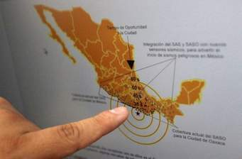

Sismos en la Ciudad de México
Sismo en la Ciudad de México
El primer temblor de gran intensidad data del 7 de junio de 1911 conocido como "el sismo de Madero" ya que éste se produjo paradójicamente cuando Francisco I. Madero hacía entrada a la capital. Este temblor afectó la región situada entre los estados de Jalisco y Colima.
El 28 de julio de 1957 se registró en la Ciudad de México, un temblor de magnitud 7.7 cuyo epicentro se localizó frente a las costas de Guerrero
Se recuerda como "el sismo del Ángel", porque a causa del movimiento se cayó dicha estatua que corona la Columna de la Independencia.
El terremoto del pasado jueves 7 de septiembre fue uno de los más intensos de la historia de México despuéés del sismo 19 de septiembre de 1985.
"Lo más insoportable durante el día fueron los gritos de auxilio. Allí estaban esas montañas de escombros, de acero y cemento, y nosotros sin equipo necesario sin plumas ni escaleras telescópicas ni traspaso, solo con palas, picos y tenazas"
El 19 de septiembre de 1985 la ciudad de México fue sacudida por un terremoto de 8.1 donde se reportaron unas 4.500 víctimas mortales ante el Ministerio Público pero, hasta la fecha, no se ha podido contabilizar el número exacto de muertes que provocaron los derrumbes.
La noche de este 7 septiembre, casi 32 años después del sismo, la alarma volviv a sonar en la Ciudad de México, lo que predijo un terremoto de 8.2 cuyo epicentro fue en Chiapas.
Los mayores daños se reportaron en ese estado y en la vecina Oaxaca, donde se han confirmado la muerte de más de 30 personas
El susto y el miedo a que se repita el suceso del 85 estuvo, a pesar de todo, muy latente durante los minutos que duró el temblor.
- 